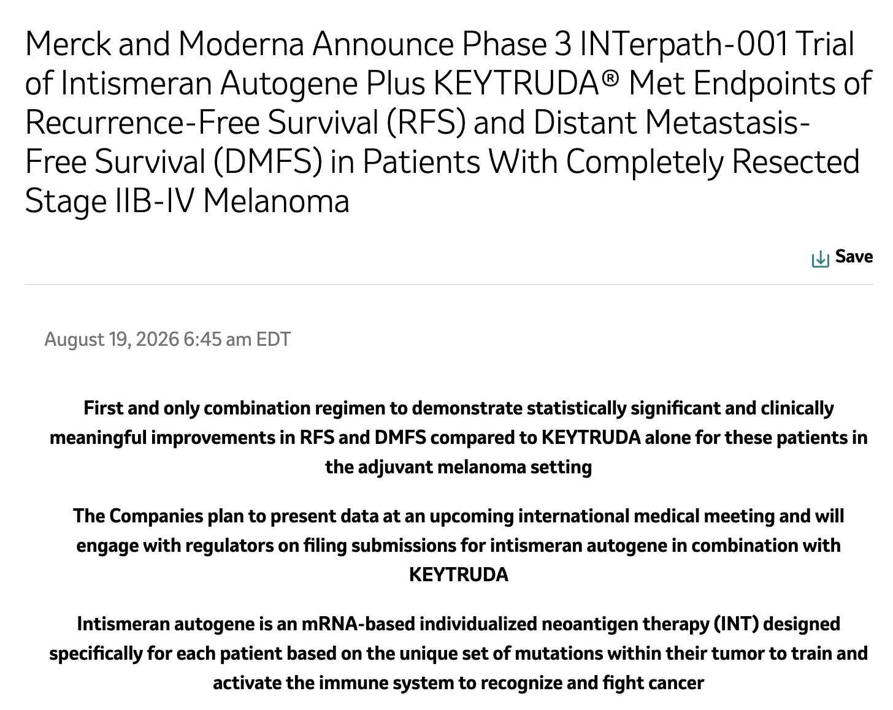
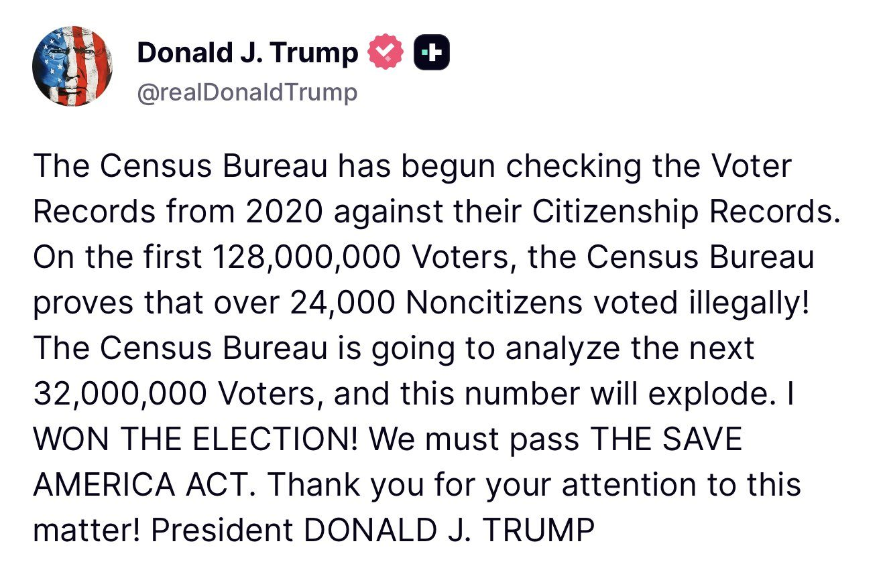
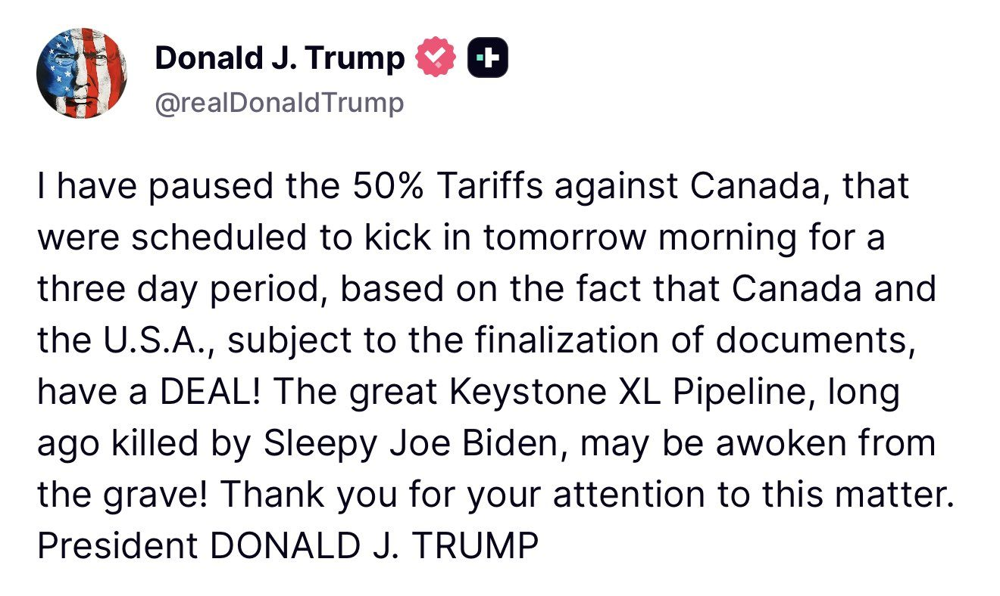
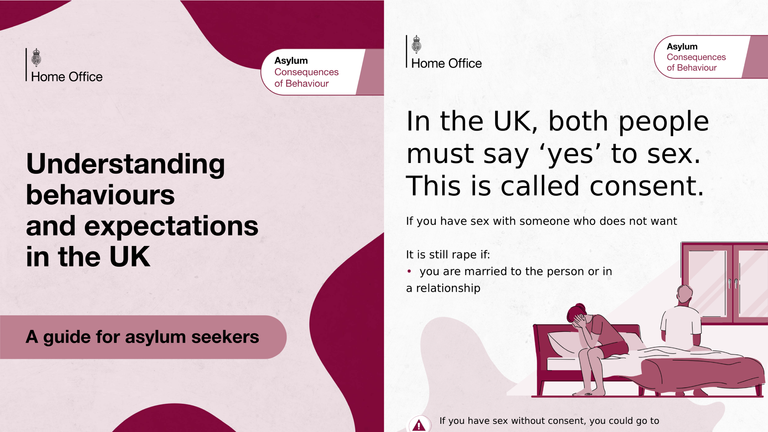

The Freedom 250 Chronicle
Caitlin Long: NYSE and Nasdaq will list tokenized stocks within 12–24 months
JUST IN:📈 "You will see all stocks tokenized, trading on New York Stock Exchange and probably NASDAQ within the next 12 to 24 months," says Custodia Bank's Caitlin Long. "This is gonna force tokenized dollars into the banking system, whether the banks are ready for it or not."
Raytheon and Lockheed to self-fund new U.S. munitions plants
.@USDASDuffey on accelerating munitions production: "We have convinced industry — not just Raytheon, but Lockheed and the Patriot announcement two weeks ago — to invest billions of dollars of their own money to build the workforce, the supply chains, the factories that we need to get multiples of production of these key munitions."
Merck and Moderna post the first Phase 3 win for a personalized cancer vaccine
MERCK $MRK AND MODERNA $MRNA JUST HIT THE FIRST POSITIVE PHASE 3 RESULT EVER FOR A PERSONALIZED CANCER VACCINE
Their Phase 3 INTerpath-001 trial found that "intismeran autogene, an mRNA therapy custom-built from each patient's own tumor mutations, combined with Merck's KEYTRUDA, significantly improved recurrence-free survival and distant metastasis-free survival versus KEYTRUDA alone in patients with completely resected stage IIB-IV melanoma."
This is the first Phase 3 readout ever for an individualized neoantigen therapy, and the first Phase 3 study to beat KEYTRUDA alone as a standard-of-care adjuvant treatment for resected melanoma.
Merck and Moderna will present full data at an upcoming medical meeting and begin talking with regulators about filing submissions.

Grip robots pick the trash sorting machines can't
Grip builds intelligent robots that pick the trash existing sorting machines can't.
Robotic manipulation just started working. Foundation models can now grasp the deformable, entangled, never-before-seen objects that waste streams are full of, on hardware that's finally cheap enough to make the economics work. We install modular robotic cells and every pick makes the whole fleet smarter.
We start with plastic contamination in organic waste, then expand to every stream where machines still leave the hard objects to humans. Grip is becoming the general manipulation platform for global waste infrastructure.
Founded by robotics engineers from ETH Zürich. Backed by Y Combinator (S26).
▶ Watch on XHippos unveils an AI exoskeleton it calls America's first super soldier
Unveiling America’s first super soldier, powered by Hippos Exoskeletons 🇺🇸
We integrated an invisible layer of physical intelligence and edge AI with uniforms, avoiding injuries and casualties.
Just like Captain America, their body becomes unbreakable across 1000s’ of mission.
▶ Watch on XChaos in Dearborn as Jake Lang arrives; police arrest an armed protester
🔥🚨 BREAKING — Absolute chaos erupts in Dearborn, Michigan, outside the Henry Ford Centennial Library as anti-Muslim protester Jake Lang arrives.
Shortly before, police arrested a pro-Islam protester wielding a firearm.
Roughly 55% of residents in Dearborn, Michigan, are Muslim.
DHS: every TPS termination is now in effect — leave or be deported
EVERY TPS TERMINATION IS NOW IN EFFECT.
For decades, TEMPORARY Protected Status was used as a defacto amnesty program. Those days are OVER.
Those with terminated TPS are now in our nation ILLEGALLY. They must leave now or be swiftly DEPORTED.
Trump admin cuts $3 billion in tax credits for illegal migrants
Trump admin axes refundable tax credits for illegal migrants, saving taxpayers $3B
Abbott moves to ban H-1B workers from Texas public schools
Gov. Greg Abbott is calling for a total ban on H-1B workers in Texas public schools—including current visa holders.
“Exactly zero Texas public school employees should be here on H-1B visas.”
OCC: de novo bank charters and the GENIUS Act under Bessent
Under @SecScottBessent’s leadership, the OCC is supporting @POTUS’ efforts to grow the economy and lead the global digital currency revolution. Hear @USComptroller Gould’s comments on de novo chartering, digital activities & implementing the GENIUS Act. https://occ.gov/news-events/events/files/event-comptroller-discusses-embracing-responsible-innovation.html
CFTC Innovation Advisory Committee holds its first meeting tomorrow
What once felt like the future is already part of the past. That’s the nature of innovation, and finance is no exception.
Tomorrow, we turn our attention to what comes next.🚀
CFTC asks for comment on listing compute derivatives
.@CFTC Requests Comment on the Listing of Compute Derivatives Contracts:
Trump thanks Scotts Miracle-Gro for the new White House lawn
Trump: You know, grass has a life like humans have a life. This has all been redone, it's all topsoiled. Lot of good ingredients. If you're grass, you're very happy. It was given, free of charge, by Scotts Miracle-Gro. They actually contributed to my campaign. So I wanna thank Scotts Miracle-Gro.

Trump inspects the new helipad on the South Lawn
.@POTUS shows off the new helipad under construction on the South Lawn: "Nice job, fellas!"
▶ Watch on XTrump announces a GOP midterm convention in Dallas, Sept 9–10
FCC's Carr: Disney still owes the public interest on the airwaves
All broadcasters have an obligation to operate in the public interest—even Disney.
Indeed, broadcasters made a deal with the American public—in exchange for free access to a valuable public resource (the airwaves) they agreed to meet their public interest obligations.
This sets them apart from cable channels or podcasts or newspapers.
While Disney has now filed a meritless case based on their own campaign of disinformation, the FCC will follow the facts and the law wherever they go.
The press pack trails Trump across the South Lawn
The press following around the most transparent President in history 🤣🇺🇸
▶ Watch on XA lion among sheep: Trump walks ahead of the White House press
Chinese national charged with casting a fraudulent 2024 ballot in Massachusetts
🚨 BREAKING 🚨Chinese national arrested for allegedly casting a fraudulent ballot in the 2024 presidential election by impersonating a lawful permanent resident — then reporting the victim to federal authorities for “illegally” voting.
The 33-year-old Andover resident also allegedly impersonated the victim and his wife in fraudulent immigration filings, resulting in the confiscation of their Green Cards and their placement in removal proceedings.
The defendant will appear at 2 p.m. today in federal court in Boston.
READ MORE: https://www.justice.gov/usao-ma/pr/chinese-national-charged-voter-fraud-massachusetts
Census Bureau: 24,000 noncitizens among the first 128 million 2020 voters

Trump says North Korea has 57 nuclear weapons
BREAKING - Trump says North Korea has 57 nuclear weapons
Rubio sanctions ICC president Tomoko Akane and prosecutor Abdoulaye Seye
Last month, I launched a diplomatic campaign to dismantle the ICC’s threat to our national sovereignty. The Trump Administration is sanctioning ICC President Tomoko Akane and Senior Trial Lawyer Abdoulaye Seye in our unwavering mission to protect Americans from this sham of a court. In honor of our Declaration of Independence, Americans will never be transported beyond seas to be tried for pretend offenses.
Rubio: the ICC is corrupt and fatally politicized
FOX NEWS: In announcing the sanctions against ICC President Tomoko Akane of Japan and the ICC's senior trial lawyer, Abdoulaye Seye of Senegal, Secretary of State Marco Rubio called the court "corrupt and fatally politicized."
Fortress North America: the Keystone XL map is back on the table
Slowly but surely Fortress North America is taking shape.
The forcing function, President Trumps vision.
Trump pauses 50% Canada tariffs for three days, teases a Keystone XL revival

Ex-Fauci adviser David Morens pleads guilty to hiding COVID records
Fauci crony pleads guilty to fraud around COVID.
Former senior NIAID adviser David Morens admitted to conspiring to hide federal records from the American people.
Morens worked to evade federal recordkeeping requirements and conceal communications related to the COVID pandemic.
Morens pleaded guilty to concealing COVID research records, CTV reports
Ex-Fauci adviser pleads guilty to conspiring to conceal COVID-19 research records during pandemic, per CTV.
Subprime auto 60-day delinquencies hit 6.7%, worse than 2008
BREAKING: 60+ day delinquencies on sub-prime auto loans has risen to 6.7%, surpassing the worst months of the 2008 financial crisis.
UK Home Office posters tell asylum seekers not to abuse children
🚨 NEW: The Government is handing out posters to asylum seekers telling them not to have sex with girls or mutilate their genitals

China becomes the second country to land an orbital-class booster
China becomes the second country to land an orbital class rocket booster!!!
Trump nominates Dr. Heidi Overton as FDA commissioner
GAO: $2.7 trillion in improper payments since 2003
$2.7 TRILLION in improper payments has been reported by executive agencies since 2003 — per GAO, payments made in error, in the wrong amount, or without proper documentation.
If 'improper payments' were a country, it would be the 8th largest economy in the world — larger than the 2024 GDP of Italy, Canada, or Russia (IMF).
And that's just what gets reported. GAO estimates the government loses between $233 and $521 BILLION every year to fraud alone — a figure Treasury Secretary Bessent has cited as up to 10% of the entire federal budget.
Congress has passed five separate laws targeting the problem since 2002 — and improper payments still went from $35 billion to $236 billion a year.
The fix: track every dollar in public, fund outcomes, and judge auditors on money recovered — not reports filed.
https://ciceroinstitute.org/blog/government-accountability/
Florida DOGE audit: 85% of state-university courses are non-ideological or balanced
One of the tidbits from the state-led DOGE audit of state university courses: 85% of courses are either non-ideological or ideologically balanced.
This is better than other systems, and in some cases far better. But there is more room for improvement.
The audit found that the most ideologically-charged courses (almost invariably skewed to the left) are also among the least rigorous, and are in programs that answer to highly-ideological and activist accreditors.
We are working with @usedgov to bust up the unelected, unaccountable accreditation cartel that has pushed an agenda for years.
Ford will build more Lincolns in the U.S. and stop importing them from China
TRUMP EFFECT: “Ford Motor Company announced today it will grow Lincoln production in the U.S. beginning in 2030. As part of this plan, Lincoln will phase out the importation of vehicles from China for the U.S. market.”